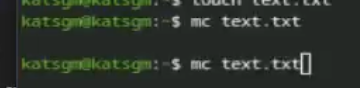
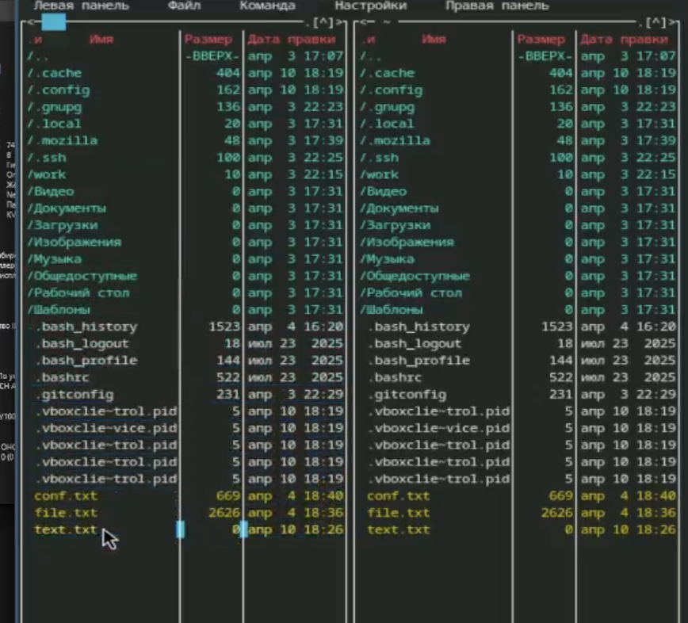
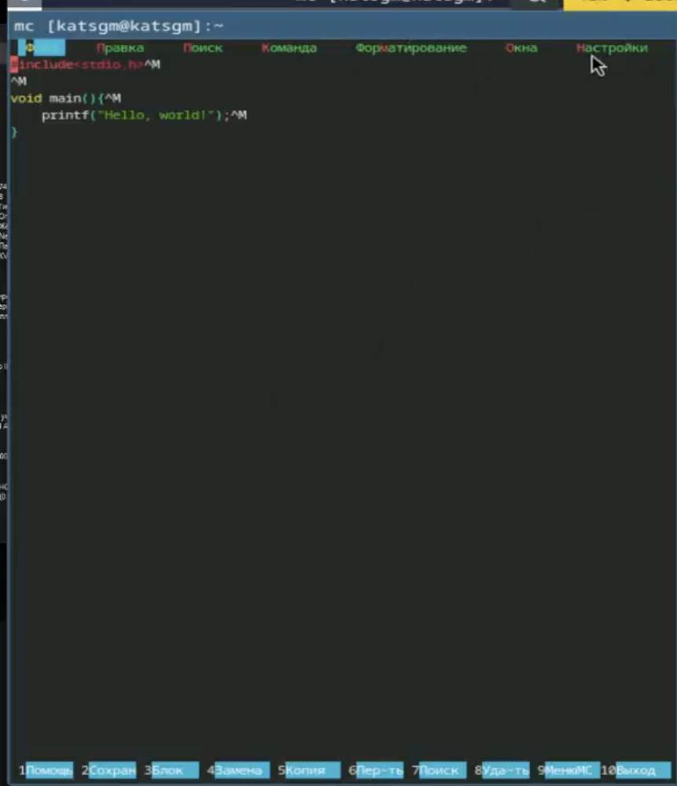
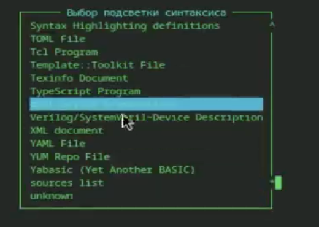
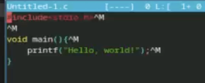

Изучаю информацию о mc, вызвав в командной строке man mc. (рис. 1)

Запускаю из командной строки mc, изучаю его структуру и меню. (рис. 2)

Выполняю несколько операций в mc, используя управляющие клавиши. Создаю текстовой файл text.txt.



Режимы работы mc: Две панели (стандартный), Информация (свойства файла/ФС), Дерево (дерево каталогов), Отключённые панели (только shell).
Операции с файлами через shell и mc: Shell: cp, mv, rm, mkdir. mc: F5 (копирование), F6 (перемещение), F8 (удаление), F7 (создать каталог).
Структура меню Левой/Правой панели: Список, быстрый просмотр, дерево, информация, формат вывода, сортировка, фильтр.
Структура меню Файл: Просмотр (F3), правка (F4), копирование (F5), перемещение (F6), создание каталога (F7), удаление (F8), права доступа, ссылки, выход (F10).
Структура меню Команда: Дерево каталогов, поиск файлов, перестановка панелей, сравнение каталогов, история команд, быстрые каталоги, восстановление файлов, правка файлов меню/расширений.
Структура меню Настройки: Конфигурация панелей, внешний вид, набор символов, подтверждения, распознавание клавиш, виртуальная ФС.
Встроенные команды mc: cd, cp, mv, mkdir, rm, pwd, find – через командную строку внутри mc.
Команды встроенного редактора mc: Сохранить (F2), выйти (F10), удалить строку (Ctrl+y), копировать/вставить (F5/F6), поиск (F7), отмена (Ctrl+u), переходы (Ctrl+Home, Ctrl+End).
Средства для создания пользовательского меню: Файл ~/.mc/menu – редактируется через меню Команда → Редактировать файл меню.
Средства для действий над текущим файлом: Команды меню Файл, горячие клавиши (F3–F8), а также пользовательское меню (F2).
В ходе выполнения лабораторной работы были освоены основные возможности командной оболочки Midnight Commander. Приоб ретены навыки практической работы по просмотру каталогов и файлов; манипуляций с ними.